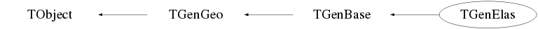

class TGenElas: public TGenBase
Event generator base class
Function Members (Methods)
public:
protected:
| virtual void | TObject::DoError(int level, const char* location, const char* fmt, va_list va) const |
| void | TObject::MakeZombie() |
Data Members
public:
| enum TObject::EStatusBits { | kCanDelete | |
| kMustCleanup | ||
| kObjInCanvas | ||
| kIsReferenced | ||
| kHasUUID | ||
| kCannotPick | ||
| kNoContextMenu | ||
| kInvalidObject | ||
| }; | ||
| enum TObject::[unnamed] { | kIsOnHeap | |
| kNotDeleted | ||
| kZombie | ||
| kBitMask | ||
| kSingleKey | ||
| kOverwrite | ||
| kWriteDelete | ||
| }; |
protected:
| Double_t | TGenGeo::fCaloAngle | Calorimeter+PA angle (rad) |
| Double_t | TGenGeo::fCaloDist | Calorimeter front face distance from the center of the target |
| Double_t | TGenGeo::fCaloHorAccL | Calorimeter horizontal left acceptance (mm) |
| Double_t | TGenGeo::fCaloHorAccR | Calorimeter horizontal right acceptance (mm) |
| Double_t | TGenGeo::fCaloVerAccD | Calorimeter vertical downwards acceptance (mm) |
| Double_t | TGenGeo::fCaloVerAccU | Calorimeter vertical upwards acceptance (mm) |
| Double_t | TGenBase::fEbeam | Beam energy |
| Bool_t | TGenBase::fFermi | Fermi momentum corrections (?) |
| Int_t | TGenBase::fNwrite | ! Number of parameters per event to write |
| Double_t | TGenGeo::fPAAzimAccMax | PA maximum azimuth acceptance (rad) |
| Double_t | TGenGeo::fPAAzimAccMin | PA minimum azimuth acceptance (rad) |
| Double_t | TGenGeo::fPAPolarAccMax | PA maximum polar acceptance (rad) |
| Double_t | TGenGeo::fPAPolarAccMin | PA minimum polar acceptance (rad) |
| Double_t | TGenBase::fQ2 | Q2 for the event |
| Double_t | TGenBase::fQ2max | Maximum Q2 for the event |
| Double_t | TGenBase::fQ2min | Minimum Q2 for the event |
| Bool_t | TGenBase::fRadCor | External bremsstrahlung before the vertex and internal (elastic) radiative corrections |
| TRandom2* | TGenBase::fRan | Random number generator |
| Double_t | TGenGeo::fSpecAngle | Left spectrometer angle (rad) |
| Double_t | TGenGeo::fSpecHorAcc | Spectrometer horizontal acceptance (rad) |
| Double_t | TGenGeo::fSpecHorAccGen | Spectrometer horizontal acceptance (rad) |
| Double_t | TGenGeo::fSpecMom | Central spectrometer momemtum (GeV) |
| Double_t | TGenGeo::fSpecMomAcc | Spectrometer momentum acceptance: (delta p)/p |
| Double_t | TGenGeo::fSpecMomAccGen | Spectrometer momentum acceptance: (delta p)/p |
| Double_t | TGenGeo::fSpecVerAcc | Spectrometer vertical acceptance (rad) |
| Double_t | TGenGeo::fSpecVerAccGen | Spectrometer vertical acceptance (rad) |
| Double_t | TGenGeo::fTargDens | Target density |
| Double_t | TGenGeo::fTargLength | Target length |
| Int_t | TGenGeo::fTargType | Target type |
| Double_t | TGenGeo::fTargZoff | Target Z offset in cm |
| TVector3* | TGenBase::fVertex | Vertex of interaction |
| Double_t* | TGenBase::fdmom | ! Deuteron momentum distribution; |
| TLorentzVector* | TGenBase::fe | Scattered electron |
| TLorentzVector* | TGenBase::feini | Initial electron |
| TLorentzVector* | TGenBase::feprerad | Scattered electron at vertex |
| static Bool_t | TGenBase::fgErrors | Display errors ? |
| static Bool_t | TGenBase::fgIsInit | Is TGenBase initialized ? |
| static Bool_t | TGenBase::fgWarnings | Display warnings ? |
| Double_t | TGenGeo::fm | Mass of the recoil particle |
| TLorentzVector* | TGenBase::fpini | Initial proton (or neutron) |
| TLorentzVector* | TGenBase::fq | Virtual photon |
| Double_t* | TGenBase::frho | ! Deuteron density (?) distribution; |
| Double_t | TGenBase::fxb | xb for the event |
| Double_t | TGenBase::fxbmax | Maximum x_b for the event |
| Double_t | TGenBase::fxbmin | Minimum x_b for the event |
| ofstream* | TGenBase::output | ! Temporary output file |
Class Charts
{kind=link}
{kind=link}
{kind=link}
{kind=link}

Function documentation
TGenElas(Double_t Ebeam, Int_t TargType, UInt_t seed1 = 1, UInt_t seed2 = 2)
Default constructor Initial 4-vectors are initialized
void IntRCBef(void)
Makes internal radiative corrections _before_ the vertex (to the initial) electron) using the equivalent radiator technique. Uses \Delta E=E_0 * R^(2./nu) with R randomly between 0 and 1. Factor 1/2 is because internal corrections must be applied twice (before and after the vertex) with equivalent radiator thickness half each time.
void IntRCAft(void)
Makes internal radiative corrections _after_ the vertex (to the scattered electron) using the equivalent radiator technique. Uses \Delta E=E_0 * R^(2./nu) with R randomly between 0 and 1. Factor 1/2 is because internal corrections must be applied twice (before and after the vertex) with equivalent radiator thickness half each time.
void ComputeElas(void)
Computes the gamma* p -> p' reaction in the center of mass. Initially generated electron, proton and virtual photon are all rotated by 180 deg along the beam axis in order to generate an electron to be detected in the calorimeter and a proton in the spectrometer. All vectors are boost back to the laboratory.
void GenKin(void)
Double_t KellyM(Double_t )
JJ Kelly PRC 70, 068202 (2004)
Magnetic Form Factor fit
Returned value is ratio to dipole*mu_p
Double_t XSecTotal(Int_t steps = 1000)
Gives the total cross-section for the elastic setting (in barn). It integrates numerically the differential cross-section. The number of integration steps can be specified. Default value is 1000. It does not take radiative corrections into account. It doesn't check for electron in calorimeter, etc. For a precise calculation of the total cross-section of the (generated) run and then the running time, do as in the example at test/macroelas.C
void ApplySpecVerAcc(Double_t aav = -1.)
Applies vertical spectrometer acceptance by rotating all 4-vectors around the beam axis. An angle can be specified, otherwise it's generated randomly between spectrometer acceptances
void Write2File(void)
void Print(char* opt = "")
Output on screen. If option "all" is specified the complete setup of the
event is printed out. By default only the final state 4-vectors and the
virtual photon are displayed.